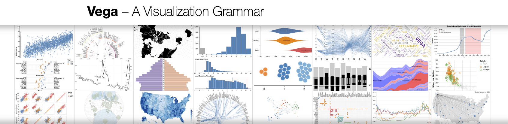

Vega interactive graphics gallery
Interactive visualizations provide a more engaging and dynamic way to explore and understand data, enabling users to drill down into particular aspects of the data that may not have been visible in a static chart or graph. And Vega as a powerful and flexible tool helps users gain insights from complex datasets in a user-friendly way. The following Vega projects from Jing will show you how to present data in an interactive way. Please note the detailed Vega syntax could be viewed in Vega Editor.
Interactive pie chart shows the different number of Spotify plays throughout the whole day according to the radius size of each arch. Different color opacity of different arches are used to distinguish different hours of the day.
Interactive stack bar chart shows the proportion of death caused by 'Intentional self-harm' for different gender and age groups within Sweden during 1997-2021.
Interactive bar chart with hover highlight shows the number of new cases of breast cancer for different gender and age groups within Sweden during 1997-2021.
Interactive map with zoom shows the number of Spotify users in each country (according to their geographical data). The gradient color represents the number of users.
Interactive map shows the prevalence of CSVD in Low-income countries (for meta-analysis project)